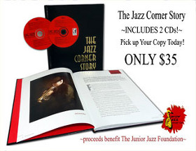

History of The Junior Jazz Foundation
During the past 15 years, due to the vision and foresight of Bob Masteller, The Jazz Corner has built both a tradition and a reputation as one of the premier Jazz Clubs in the world. Many peers, such as Bucky Pizzarelli, George Shearing, Warren and Allan Vache, and many other international artists, have rated it as the top club in the United States. Parallel with this evolution has been Masteller’s passion to pass on the legacy of Jazz to succeeding generations. Hence, the Junior Jazz Foundation was formed in 2006.
The Junior Jazz Foundation (JJF) is the philanthropic outreach of The Jazz Corner and is a 501-3C non-profit organization with an independent Board of Directors who provide oversight to all of the policies and By Laws of the Foundation
Our approach to accomplishing this is Twofold:
- To utilize The Junior Jazz Foundation to seek donations of goods and services; to raise funds for new equipment, instruments, schools, workshops, master-classes and programs which enhance the arts learning environment.
- To attract, promote, and present quality jazz throughout the area through collaboration with organizations and individuals dedicated to the proliferation of the Great American Art Form of Jazz through both performance and fundraising for educational programs.
JJF Accomplishments
Past and Present Programs
- Summer camps for students
- $10,000 of instruments purchased and distributed
- Clinics and workshops for middle school and high school students
- Workshop for 100 5th Graders
- Annual scholarship program at High School
- Donated funds to Hilton Head High School and Hilton Head Christian Academy for furthering jazz education
- Outreach concerts in private communities
Programs
- Patron presented concerts
- Outreach concerts at schools and private communities partially sponsored by JJF
- Community lectures presented about The History of Jazz held throughout public and private locations in the LowCountry
Goals
- To continue to raise funds for youth and school programs
- To educate listeners
- o broaden the audience for Jazz
- To present and showcase quality Jazz on Hilton Head Island